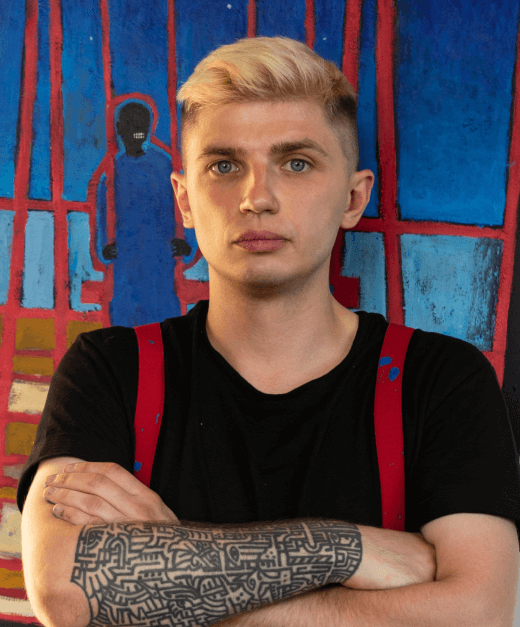

#NEIVANMADE
Mykhailo Skop
1993 - Born in Lviv, Ukraine
Artist, illustrator, PhD student.
Ukrainian artist, and Ph.D. student. The primary media are easel graphics, mural art,
digital
art, and
multimedia installation. Since February 24, 2022, Mykhailo has created military posters
supporting Ukraine
and volunteers. He believes in the power of visual signs because they can ignore
geographical
and language
barriers, making their way straight to the human heart.
Education:
- I. Trush Lviv State College of Decorative and Fine Arts. A.A, Artworks Restoration, 2013
- Lviv National Academy of Arts, M.A, Graphic Design, 2019
- Lviv National Academy of Arts, Ph. D., Theory and History of Art (pending 2023)
Game art and illustration:
- I. Trush Lviv State College of Decorative and Fine Arts. A.A, Artworks Restoration, 2013
- Lviv National Academy of Arts, M.A, Graphic Design, 2019
- Lviv National Academy of Arts, Ph. D., Theory and History of Art (pending 2023)
Solo Exhibitions and Projects:
- 2022 - WAR DIARIES, The Why Not Gallery, T'bilisi, Georgia
- 2021 - Pathway, performance, Lviv, Ukraine
- 2020 - Present, Lviv, Ukraine
- 2020 - Appearance, happening , Lviv, Ukraine
- 2018 - 49, performance, Tse gallery, Lviv, Ukraine
- 2016 - Sleepless Eye, Mykhailo Hrushevsky State Memorial Museum, Lviv, Ukraine
- 2015 - New joy has become, The Vernadsky National library of Ukraine, Kyiv, Ukraine
- 2015 - Militant Church, Lviv Art Palace, 2015, Lviv, Ukraine
- 2015 - Before Dawn, Sholom-Aleichem Museum, Kyiv, Ukraine
- 2014 - For the warlord who defeats the two-headed beast, Historical and Memorial Museum of Mykhailo Hrushevsky, Kyiv, Ukraine
- 2012 - In the Desert, Women's Christian Mary Society “Mercy”, Lviv, Ukraine
Solo Exhibitions and Projects:
- 2022 - Ukraine. Under a Different Sky. Ujazdowski Castle Centre for Contemporary Art, Warsaw, Poland
- 2022 - Life defeats death. Ukraine now. Reus, Catalonia/Spain.
- 2022 - Ukrainian wartime poster. Ukrainian House, Kyiv, Ukraine
- 2022 - Mariupol. Vivre. Théâtre de la ville, Paris, France
- 2022 - Carteles de guerra. Ucrania, Langa del Castillo, Spain
- 2022 - Ukrainian Voice. Your choice!, Bread & Salt, San Diego, USA
- 2022 - When Walls Talk, House of European History in Brussels, Belgium
- 2022 - Reflection, Art in a Time of War, Westflügel Leipzig,Leipzig, Germany
- 2022 - Poster Art For Ukraine, Wilma Theater, Philadelphia, USA
- 2022 - Stand With Ukraine, Association of graphic designers 4th block, Ukraine
- 2022 - Text and Visions of Ukraine, Ukrainian League of Philadelphia, USA
- 2022 - Transit zone. Exit gate № 2022, Artist, Kyiv, Ukraine
- 2021 - Avangard Festival, Lviv Palace of Arts, Lviv, Ukraine
- 2021 - Exhibition from the residence on Bakota in Khmelnytsky, Museum-Library of the Podolsk Society, Khmelnytsky, Ukraine
- 2021 - The Great Cellar, Poltava Academic Regional Puppet Theater, Poltava, Ukraine
- 2021 - Second Ukrainian Biennale of Levkas, White World, Kyiv, Ukraine
- 2019 - Sun territory festival, Vinnytsia, Ukraine
- 2019 - Falling Shadow project, Dream at the Gardens of Giardini of the Ukrainian pavilion at the 58th Venice Biennale, Venice, Italy
- 2019 - InkBox, performance, Mystetskyi Arsenal, Kyiv, Ukraine
- 2018 - New wave exhibition, iFest Republic, Lviv, Ukraine
- 2018 - Night without sleep, Tse gallery, Lviv, Ukraine
- 2017 - Mezzanine, Tse gallery, Lviv, Ukraine
- 2016 - Gothica!, Catastrofa gallery, Lviv, Ukraine
- 2016 - From the Gallery's collection, IconArt gallery, Lviv, Ukraine
- 2015 - Shingle, Embassy of Ukraine in the Kingdom of Spain, Madrid, Spain
- 2014 - High Castle, International Autumn Art Salon, Lviv Art Palace, Lviv, Ukraine
- 2010 - High Castle, International Autumn Art Salon, Lviv Art Palace, Lviv, Ukraine
Institutional and public collections:
- Chase Contemporary, New York, USA
- House of European History in Brussels, Belgium
- Mykhailo Hrushevsky State Memorial Museum, Lviv, Ukraine
- Historical and Memorial Museum of Mykhailo Hrushevsky, Kyiv, Ukraine
- Sholom-Aleichem Museum, Kyiv, Ukraine
- Tse gallery, Lviv, Ukraine.
- The national center of folk culture “Ivan Honchar Museum”, Kyiv, Ukraine
- The National Memorial to the Heroes of the Heavenly Hundred and Revolution of Dignity Museum, Kviv, Ukraine
- Drohobychyna Museum, Drohobych, Ukraine
- Chapel of St. Tarasius, Baturyn, Ukraine